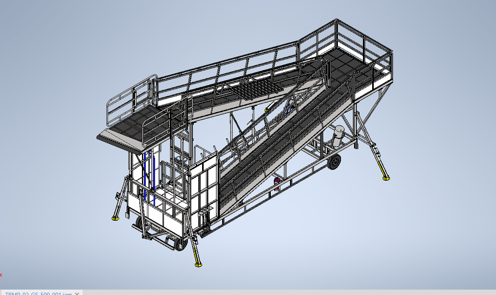
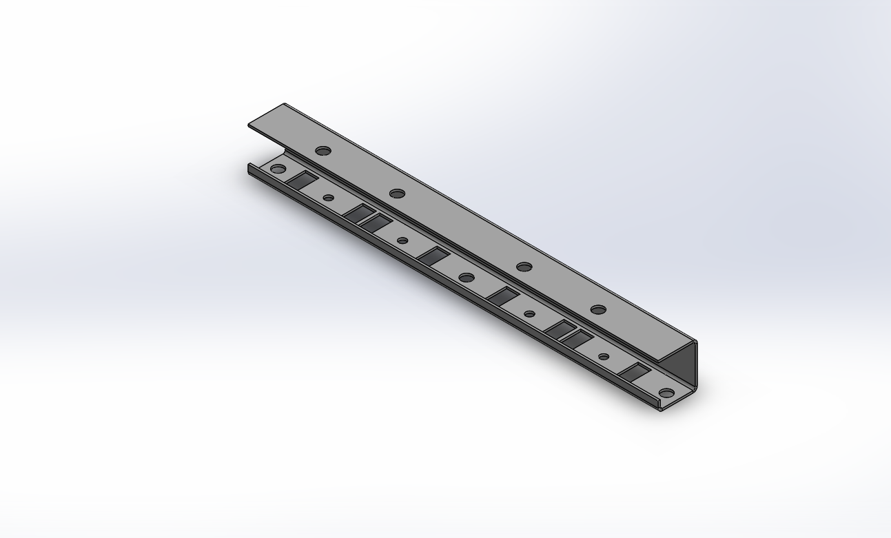
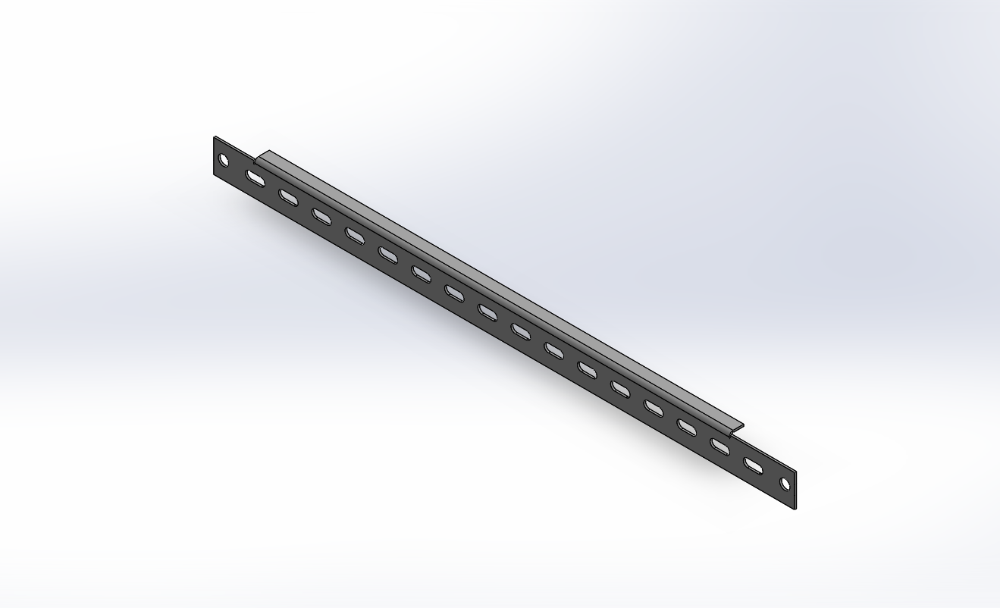

SolidWorks
3D part modeling, assemblies, sheet metal and 2D drawings.
DESIGN ENGINEER • MECHANICAL ENGINEER
Mechanical Engineer with 3+ years of overall experience, including 1+ year of hands-on Design Engineering experience in industrial structure projects. Skilled in SolidWorks, Autodesk Inventor, 2D/3D CAD Modeling, fabrication drawings, assembly drawings, BOM preparation, GD&T, and basic design calculations.

01 — ABOUT
I work across 3D CAD modeling, 2D drawings, fabrication documentation and assembly design, with a focus on clear engineering documentation and practical manufacturing requirements.
My recent design work includes industrial trestle structures and related mechanical components, with design modifications driven by client requirements and project changes.
02 — CORE SKILLS
Tools and documentation skills used across design and fabrication workflows.
3D part modeling, assemblies, sheet metal and 2D drawings.
3D mechanical modeling, layouts and engineering documentation.
I can create and modify 2D/3D cad modeling
Bill of Materials creation and maintenance for project requirements.
Ability to read and understand engineering drawings and tolerances.
Ability to read and understand engineering drawings and tolerances.
Ability to read and understand engineering drawings.
Ability to prepare document.
Sheet metal part modeling and preparation of 2D drawings.
03 — PROJECTS
Eight project cards covering industrial trestles, mechanical structures, fabrication documentation and sheet-metal work.

Designed and developed a trestle structure and related mechanical components with 3D modeling, 2D drawings and fabrication documentation.

Mechanical structure design with technical layouts, component modeling and manufacturing-oriented drawings.

Designed structure and related components with focus on practical assembly and fabrication requirements.

Developed 3D structure concepts and supporting components with clear assembly and fabrication documentation.
Created design documentation and technical layouts for an engine inspection support structure.

Developed a support structure and associated mechanical components with fabrication-ready documentation.

Created sheet-metal part models and prepared corresponding 2D drawings for manufacturing requirements.

Created sheet-metal part models and prepared corresponding 2D drawings for manufacturing requirements.
04 — EXPERIENCE
• Worked on industrial structure and trestle design (ATR H S Trestle, ATR Wing Root Trestle, Avionics Trestle, ATR Engine Inspection Trestle, ATR Engine Replacement Trestle, Duct Trestle, Fan Cowl Trestle).
• Designed and developed trestle structures and related
components using SolidWorks and Autodesk Inventor.
•
Created 2D drawings, 3D models, fabrication drawings,
technical layouts, and assembly documentation.
• Prepared and maintained BOMs and modified designs according
to client requirements.
Worked on web application development and UI requirements, developing frontend functionality and strengthening problem-solving and technical skills.
Supported HVAC site engineering activities, project execution, site-level coordination and industrial project environments.
05 — EDUCATION
SRM Institute of Science and Technology
CGPA 8.017Janta S N Inter College, Dubari, Mau
84.8%S V M H S S, Madhuban, Mau
75.83%06 — CONTACT
Available for Design Engineer opportunities and mechanical design projects.